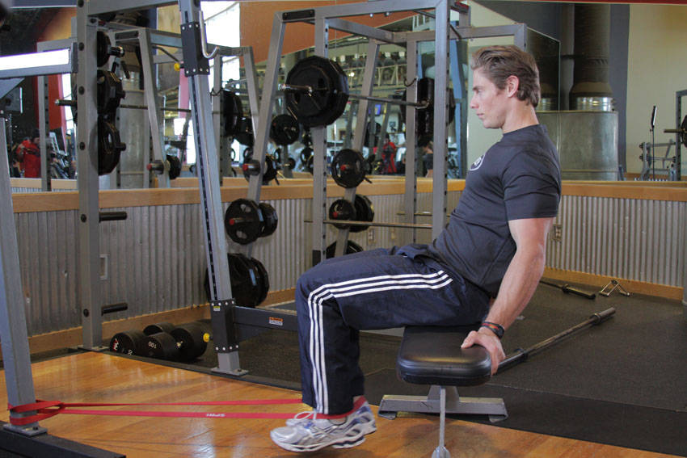

- Secure a band close to the ground and place a bench a couple feet away from it.
- Seat yourself on the bench and secure the band behind your ankles, beginning with your legs straight. This will be your starting position.
- Flex the knees, bringing your feet towards the bench. You may need to lean back slightly to keep your feet from striking the floor.
- Pause at the completion of the movement, and then slowly return to the starting position.